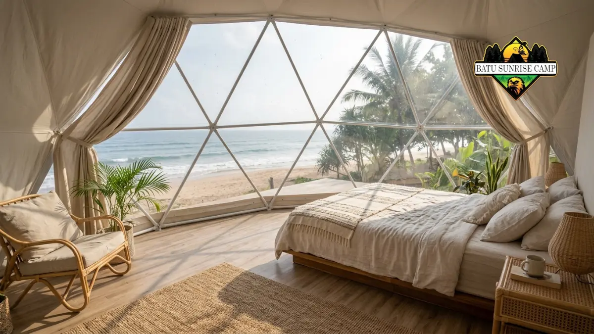

Sewa tenda glamping dome pantai adalah layanan menginap di tenda kubah berfasilitas nyaman di tepi pantai, cocok untuk liburan keluarga, pasangan, dan komunitas.
Sewa tenda glamping dome pantai menggabungkan suasana berkemah dengan kenyamanan yang mendekati penginapan.
- Badan Pusat Statistik (BPS) mencatat perjalanan wisatawan nusantara Juli 2026 mencapai 107,44 juta perjalanan.
- Global Market Insights memperkirakan pasar glamping dunia bernilai sekitar USD 2,7 miliar pada 2026.
- Lokasi, kapasitas, fasilitas, kebijakan pembatalan, dan total biaya adalah faktor utama dalam memilih.
- Cuaca dan pasang surut wajib dicek sebelum memesan agar menginap aman dan nyaman.
Apa Itu Sewa Tenda Glamping Dome Pantai?
Sewa tenda glamping dome pantai adalah layanan penyediaan tenda berbentuk kubah lengkap dengan tempat tidur dan fasilitas dasar di area pantai untuk dipakai menginap sementara.
Glamping adalah singkatan dari glamorous camping, yaitu konsep berkemah dengan kenyamanan setara penginapan.
Tenda dome merupakan struktur tenda yang dirancang dengan bentuk kubah, dilengkapi dengan rangka melengkung yang menciptakan ruang interior yang luas tanpa memerlukan tiang penyangga di bagian tengahnya.
Apabila didirikan di kawasan pantai, tenda semacam ini biasanya berorientasi menghadap ke arah laut dan dilengkapi dengan kasur, fasilitas listrik, serta kamar mandi yang dapat bersifat pribadi maupun bersama-sama.
Layanan ini ditujukan bagi keluarga, pasangan, kelompok teman, pengantin, hingga penyelenggara acara kecil. Penyewa biasanya menginap satu malam atau lebih, terutama pada akhir pekan dan libur panjang.
Glamping dome pantai punya batasan. Ruangnya lebih sempit daripada kamar hotel, kenyamanannya dipengaruhi cuaca dan angin, dan fasilitasnya dapat bervariasi antar penyedia.
Penyewa perlu memahami berbagai risiko yang mencakup cuaca hujan, banjir air pasang, serta keterbatasan dalam jangkauan sinyal telekomunikasi dan ketersediaan pasokan listrik di wilayah-wilayah terpencil.
Mengapa Wisatawan Memilih Glamping Dome di Pantai?
Wisatawan memilih glamping dome pantai karena menawarkan pengalaman menginap dekat laut dengan kenyamanan mirip penginapan, di tengah tren perjalanan domestik Indonesia pada 2026.
Menurut BPS, perjalanan wisatawan nusantara pada Juli 2026 mencapai 107,44 juta perjalanan atau tumbuh 7,23 persen secara tahunan.
BPS juga mencatat kunjungan wisatawan mancanegara pada Januari sampai Juli 2026 sebanyak 8,98 juta kunjungan, naik 5,23 persen dibanding periode yang sama tahun 2025. Angka ini menunjukkan permintaan akomodasi wisata di Indonesia tetap kuat.
Di tingkat global, Global Market Insights dalam laporan April 2026 memperkirakan pasar glamping bernilai sekitar USD 2,7 miliar pada 2026 dengan pertumbuhan tahunan majemuk 8,3 persen untuk periode 2026 sampai 2035.
Laporan yang sama mencatat segmen perjalanan keluarga menguasai 50,5 persen pangsa pasar pada 2025. Technavio pada Maret 2026 menyebut kawasan Asia Pasifik sebagai wilayah dengan laju pertumbuhan tercepat, yaitu 13,9 persen.
Estimasi lembaga riset dapat berbeda satu sama lain. Karena itu, angka pasar sebaiknya dibaca sebagai gambaran tren, bukan kepastian.

Interior tenda glamping dome yang nyaman dengan kasur berseprai putih, pencahayaan hangat, dan panel transparan menghadap pemandangan laut.
Apa Saja Manfaat Menyewa Glamping Dome Pantai?
Manfaat utama menyewa glamping dome pantai adalah akses langsung ke pantai, kenyamanan tidur yang lebih baik daripada tenda biasa, dan suasana privat untuk bersantai.
- Akses langsung ke pantai. Penghuninya memiliki kesempatan untuk menyaksikan fajar dan senja, serta melakukan aktivitas di pantai tanpa memerlukan perjalanan lebih lanjut dari tempat menginap.
- Kenyamanan tidur. Dome umumnya menyediakan kasur sungguhan, kipas atau pendingin, dan penutup tenda yang lebih kokoh daripada tenda camping.
- Privasi. Satu dome biasanya dipakai satu rombongan, sehingga suasana lebih tenang dibanding area umum.
- Pengalaman visual. Bentuk kubah dengan jendela lebar atau panel transparan memudahkan penghuni menikmati pemandangan laut dan langit malam.
- Fleksibilitas penggunaan. Dome cocok untuk liburan keluarga, perayaan ulang tahun, lamaran, hingga sesi foto, selama aturan lokasi mengizinkan.
Selain itu, banyak penyedia menawarkan paket tambahan seperti sarapan, barbeku, atau api unggun. Paket seperti ini membantu penyewa yang tidak ingin repot menyiapkan perlengkapan sendiri.
Bagaimana Cara Kerja Layanan Sewa Glamping Dome Pantai?
Cara kerja sewa glamping dome pantai dimulai dari memilih tanggal dan tipe dome, membayar uang muka, lalu check-in pada hari menginap sesuai ketentuan penyedia.
- Pilih tanggal dan tipe dome. Tentukan jumlah tamu, lama menginap, dan kebutuhan khusus seperti dekorasi atau kamar mandi dalam.
- Konfirmasi ketersediaan dan harga total. Minta rincian tarif, pajak, biaya layanan, dan biaya tambahan secara tertulis.
- Bayar uang muka. Sebagian besar penyedia meminta uang muka atau pelunasan di awal untuk mengunci jadwal.
- Simpan konfirmasi pemesanan. Dokumen ini memuat tanggal, tipe dome, fasilitas, dan kebijakan pembatalan.
- Check-in dan serah terima. Petugas biasanya menjelaskan aturan area, jam tenang, dan fasilitas yang tersedia.
- Check-out dan pemeriksaan. Petugas memeriksa kondisi dome dan fasilitas sebelum penyewa pulang.
Langkah memilih penyedia dan menyusun pemesanan dibahas lebih rinci dalam panduan memilih vendor sewa glamping dome pantai dan prosedur pemesanan.
Fasilitas Apa yang Umumnya Tersedia di Dalam Tenda Dome?
Fasilitas umum tenda glamping dome pantai meliputi tempat tidur, pendingin atau kipas, listrik, kamar mandi, dan area duduk, namun kelengkapannya berbeda di setiap penyedia.
Fasilitas dasar biasanya mencakup kasur dengan seprai bersih, bantal, selimut, lampu, dan stop kontak.
Dome tipe lebih tinggi sering menambahkan pendingin ruangan, kamar mandi pribadi, water heater, teras dengan kursi, serta koneksi internet. Pada tipe yang lebih sederhana, kamar mandi dipakai bersama dan pendingin berupa kipas.
Fasilitas luar ruangan juga penting. Beberapa lokasi menyediakan area barbeku, api unggun, ayunan, hammock, atau akses ke kolam renang.
Penyewa sebaiknya menanyakan ketersediaan listrik 24 jam, air bersih, dan area parkir sebelum memesan, karena ketiganya berpengaruh langsung pada kenyamanan menginap.
Faktor Apa Saja yang Perlu Dipertimbangkan Sebelum Menyewa?
Faktor utama sebelum menyewa glamping dome pantai adalah lokasi, kapasitas, fasilitas, keamanan, kebijakan pembatalan, dan total biaya yang dibayarkan, bukan sekadar tampilan foto.
- Lokasi dan akses. Periksa jarak dari kota, kondisi jalan, dan jarak dome ke garis pantai. Pantai dengan ombak besar memerlukan kewaspadaan lebih.
- Kapasitas dan tata ruang. Pastikan jumlah tamu sesuai kapasitas dome, termasuk anak-anak dan tambahan kasur.
- Fasilitas yang benar-benar tersedia. Cocokkan daftar fasilitas dengan kebutuhan, misalnya pendingin, kamar mandi dalam, atau listrik.
- Keamanan. Tanyakan adanya petugas jaga, penerangan malam, dan prosedur darurat.
- Kebijakan pembatalan dan perubahan jadwal. Kondisi cuaca yang tidak menguntungkan memiliki potensi untuk mengubah jadwal yang telah ditetapkan, oleh karena itu peraturan mengenai hal ini harus dinyatakan dengan jelas dan terperinci.
- Total biaya. Bandingkan harga akhir termasuk pajak, biaya layanan, dan paket tambahan. Rincian faktor harga dibahas dalam panduan biaya sewa tenda glamping dome pantai.
Bagaimana Perbandingan Glamping Dome dengan Tenda Camping dan Hotel Pantai?
Glamping dome pantai berada di antara tenda camping biasa dan hotel pantai: lebih nyaman daripada berkemah, lebih dekat dengan alam daripada kamar hotel.
- Tenda camping biasa. Biaya umumnya paling rendah dan fleksibel, tetapi penyewa perlu membawa perlengkapan sendiri, tidur di alas sederhana, dan lebih terpapar cuaca.
- Glamping dome pantai. Perlengkapan tidur dan fasilitas disediakan, suasana alam tetap terasa, tetapi ruang terbatas dan kenyamanan tetap dipengaruhi cuaca.
- Hotel pantai. Fasilitas paling lengkap, ruang lebih luas, dan perlindungan cuaca terbaik, tetapi pengalaman bernuansa alam cenderung berkurang.
Pilihan terbaik bergantung pada tujuan perjalanan. Keluarga yang menginginkan pengalaman unik namun tetap nyaman sering memilih dome, sedangkan pelancong yang mengutamakan kepraktisan penuh lebih cocok dengan hotel.
Apa Kesalahan Umum Saat Menyewa Glamping Dome Pantai?
Kesalahan umum penyewa glamping dome pantai adalah memesan tanpa membaca ketentuan, mengabaikan cuaca dan pasang surut, serta tidak mengonfirmasi fasilitas yang sebenarnya tersedia.
- Hanya mengandalkan foto. Foto promosi tidak selalu menggambarkan kondisi sebenarnya. Minta foto atau video terbaru dari penyedia.
- Tidak membaca kebijakan pembatalan. Penyewa dapat kehilangan uang muka bila jadwal berubah karena cuaca atau kendala lain.
- Membawa terlalu banyak orang. Melebihi kapasitas dapat mengurangi kenyamanan dan melanggar aturan lokasi.
- Lupa membawa perlengkapan pribadi. Tabir surya, obat pribadi, pengusir nyamuk, dan pakaian ganti jarang disediakan penuh.
- Mengabaikan aturan keselamatan. Berenang malam hari atau di area tanpa penjaga meningkatkan risiko kecelakaan.
Persiapan dan aturan keselamatan dibahas lengkap dalam tips menginap di glamping dome pantai.
Bagaimana Tips Menyewa Agar Pengalaman Menginap Maksimal?
Tips menyewa glamping dome pantai agar maksimal adalah memesan jauh hari, memeriksa prakiraan cuaca, membawa perlengkapan pribadi, dan menjaga kebersihan serta keselamatan di area pantai.
Pesan lebih awal untuk akhir pekan dan libur panjang, karena jumlah dome di tiap lokasi terbatas. Simpan seluruh percakapan dan bukti pembayaran. Tanyakan hal praktis seperti jam check-in, ketersediaan listrik, dan aturan musik atau api unggun.
Bawa perlengkapan pribadi seperti tabir surya, senter, pengisi daya cadangan, pakaian hangat untuk malam hari, dan obat-obatan pribadi.
Hormati aturan lokasi dan jangan meninggalkan sampah di pasir. Perilaku yang menjaga kebersihan membantu pantai tetap nyaman bagi tamu berikutnya.
Kapan Waktu Terbaik untuk Menyewa Glamping Dome Pantai?
Waktu terbaik menyewa glamping dome pantai umumnya musim kemarau dengan cuaca cerah dan laut tenang, tetapi hari kerja lebih sepi dan sering lebih fleksibel.
Cuaca berbeda di tiap wilayah Indonesia, sehingga musim terbaik tidak selalu sama. Penyewa dapat memeriksa prakiraan cuaca dan kondisi gelombang di situs resmi Badan Meteorologi, Klimatologi, dan Geofisika (BMKG) sebelum memastikan tanggal.
Akhir pekan dan libur panjang umumnya paling ramai dan tarifnya cenderung lebih tinggi. Menginap pada hari kerja memberi suasana lebih tenang dan kesempatan negosiasi paket yang lebih baik. Apa pun waktunya, pastikan penyedia memiliki rencana cadangan bila cuaca ekstrem terjadi.
Kesimpulan
Sewa tenda glamping dome pantai cocok bagi penyewa yang ingin suasana alam dengan kenyamanan mirip penginapan.
- Bandingkan lokasi, kapasitas, fasilitas, keamanan, dan total biaya sebelum membayar uang muka.
- Periksa prakiraan cuaca dan pasang surut, dan baca kebijakan pembatalan dengan teliti.
- Bawa perlengkapan pribadi dan jaga kebersihan pantai selama menginap.
FAQ